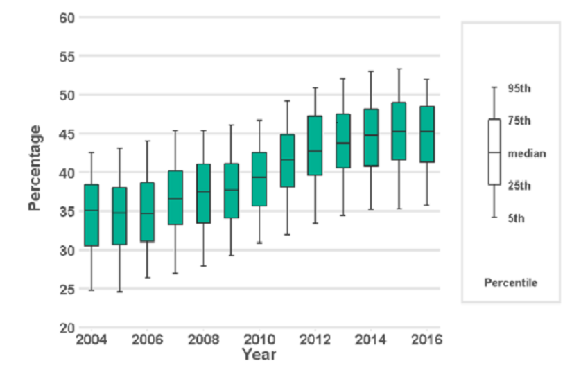
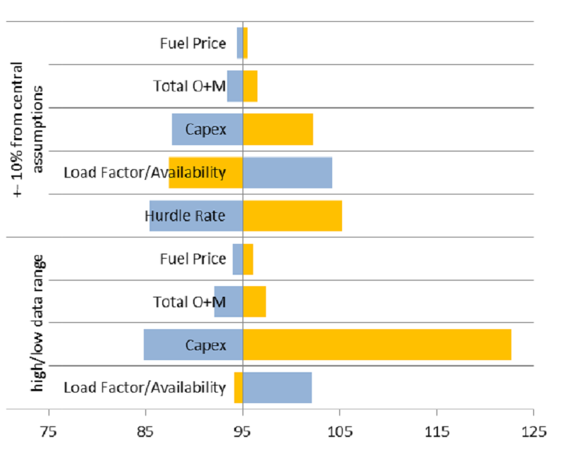

Presenting and communicating uncertainty
We now consider how to choose what messages about uncertainty we should communicate to decision makers and give advice on how to communicate those messages effectively. A wealth of additional information can be found on the GSS website (pdf).
When reporting findings from any research and analysis, it is important to be transparent about the strengths, limitations and any bias in the research process as well as the findings
Research or analytical reports should include sufficient and appropriate information about the research process, any sources of uncertainty and the steps that have or could be taken to mitigate this. Where possible it is also good practice to make other materials and outputs from the research available either through publication or upon request to enable others to better understand the context and process by which the research was conducted.
The implications of sources of uncertainty on how results should be interpreted and used in decision-making and policy development should also be communicated.
Deciding what to communicate
Decision makers may be more comfortable with certain messages, which could make communicating uncertainty a difficult task. However, latest research suggests that being upfront about uncertainty doesn’t undermine trust in the analysis or the professionalism of the analyst, so we should be unapologetic about uncertainty as part of the analytical advice needed to inform better decisions.
You should also consider the onward communication of your message to ensure that when your work is passed on to others its core message and integrity are maintained. Consider what decision makers must, should, or could know.

Decision makers are usually more comfortable with certain messages. This can make communicating uncertainty a difficult task. Decision makers can react adversely when faced with uncertainty, leading them to lose confidence in analysis. When uncertainty is large, decision makers may feel that the analysis is of no use.
Don’t let uncertainty undermine confidence in the analysis
A handy phrase to remember is “all models are wrong, but some are useful”. All analysis will be uncertain because every model is a simplification of reality. However, that does not stop them from being useful. Models allow us to better understand a system and uncertain results can help identify important features of that system.
If uncertainty means that a straightforward conclusion is not possible, focus your communication on what the uncertainty analysis can tell you. This may be the key factor that drives overall uncertainty or a greater understanding of how features of a system interact.
Presenting caveats
If most uncertainty is quantified, then present this prominently
If most of the overall uncertainty has been quantified, and you are confident that there are no unknowns which are likely to have a major impact on the results then this should be the most prominent message. Discussion of the unquantified uncertainties and risks can be included but should be positioned so that it doesn’t reduce confidence in the main results when this is not appropriate.
If there are substantial unquantified uncertainties, then presenting the uncertainty that has been quantified without this important context will give a misleading impression of precision and underestimate the uncertainty. Do not present a range with incomplete coverage as final analysis if you know that there are substantial uncertainties that are not accounted for in that range.
If little is quantified, then it may be better to present no quantification at all
If the largest source of uncertainty is the potential for a risk outside of the analysis to be realised, then this should be the most prominently displayed message.
Think about how caveats are presented. A long list is unhelpful, but two or three upfront that have the most impact on the results are likely to be more helpful and easily understood. Consider which caveats have the greater impact on the final decision that is being made. You should explain what the caveats mean for decision makers who want to use the analysis, rather than simply setting out what they are.
Front load the important caveats and explain why they matter
It is not possible to eliminate uncertainty around the causal effects in evaluation. However, study design can be used to minimise the level of uncertainty (see mitigating uncertainty in experimental and quasi-experimental evaluation methods). The level of uncertainty depends on components such as uncertainty in data used to assess outcomes, the control group and participant identification strategy. For more details on sources of uncertainty in evaluation design, see Sources of uncertainty in experimental and quasi-experimental evaluation methods).
In evaluation, the caveats and degree to which you can attribute observed changes to the intervention will vary depending on the methodology
Generalisabiltiy is the extent to which findings can be applied to another setting. Communicating the limitations in the generalisability of your study findings is crucial to ensure that results are not used inappropriately and unsupported claims are made. When using the term ‘representative’, you need to clearly communicate the context and variables for which the findings are representative. Decision makers need to be made aware of issues which limit generalisability. For example, where studies have small sample size or focus on a specific subpopulation or period of time.
Analysts must clearly communicate the extent to which findings can and cannot be generalised
Sampling error survey data is typically estimated and reported using the standard error, coefficient of variation, and confidence interval.
A confidence interval is a statistical estimate used to communicate the uncertainty around a parameter estimate. A confidence interval is the range of values that is likely to include an unknown parameter, such as the population mean, and the interval has an associated confidence level that gives the probability with which an estimated interval will contain the true value of the parameter. For example, if 80% of survey respondents give a certain response, a 95% confidence interval of [75, 85] indicates that the proportion of the population that would give that response would be between 75% and 85%. The confidence interval becomes smaller as the sample size increases. Effect sizes should be reported with confidence intervals, and what level of uncertainty that represents should be explained in accessible terms.
The ONS’s page on “Uncertainty and how we measure it for our surveys” provides more detail on these concepts.
Analysts should also report estimates of sampling error to communicate the uncertainty of results
Understanding the audience
Understand your audience when choosing appropriate communication methods
Before communicating your analysis you must consider who your audience is, why they should be interested in your work, what they know already, and what key message you need to convey to them to make their decision. People respond differently to different communication methods. It is good practice to always use Plain English, avoid analytical jargon with non analysts, and frame your results in terms of the decision being made and how it is useful for them.
If it is a group or individual you have worked with before tailor the method to what has worked well in the past (or ask them or see how they respond to different formats).
A good relationship with your decision maker will help you to choose the right communication approach for them. It will also help you to understand their motivations and the implications of uncertainty for their decisions.
Build relationships with decision makers
No matter how carefully you communicate the uncertainty to your immediate client, there is a risk that uncertainty will not be communicated upwards and that only the central numbers will persist, and important caveats will be excluded. This can also occur when writing part of a larger document – you need to ensure the key messages about uncertainty survive the drafting process.
Be conscious of how your analysis may be used in future communication
A good relationship with colleagues will minimise this risk. Work collaboratively to ensure that colleagues understand why central numbers could be misleading and in which situations it would be inappropriate for them to be communicated on their own. Always ensure that wherever possible you have sight of further communication before it is sent.
In evaluations, analysts have a responsibility to take all reasonable steps to ensure that findings from quantitative analysis are used appropriately and not misconstrued and must be clear about the level of confidence in findings, taking account of the level of uncertainty and generalisability. For some methodologies it is particularly important to ensure that audiences understand limitations and the implications for use in policymaking; for example, where analysis relies solely on limited datasets or where there is ecological fallacy (discussed in Defining and identifying uncertainty).
Consider how to present measures of uncertainty to a non-analytical audience
If presenting results to a non-analytical audience, bear in mind that they may find statistical measures of uncertainty difficult to interpret. Consider other visual methods such as a BRAG (blue/black, red, amber, green) rating scale that communicates your confidence in the results.
Deciding how to communicate uncertainty
Now you have determined who your audience is and what the message is you need to consider how to communicate with your decision makers. Firstly, think about how you will be communicating your results. Will this be via a written report, presentation, or an oral briefing with or without visuals? Any constraints on format may steer you to an approach.
This section considers a range of approaches based on your understanding of the audience and the type of message you need to deliver.
Communication basics
Identify who your audience is
As mentioned earlier, knowing who your audience is, what their interest is in this analysis, and how they interpret evidence will determine how you communicate. Test your communication with the audience, do they understand the key message from your prose or visualisations?
How something is written has a major impact on how people perceive the uncertainty. Research shows that analysis is seen as less reliable if the outputs are conveyed only in words. Numbers should be presented within a sentence if possible as this helps give context, making them easier to read and understand.
To avoid any possible confusion between analytical conclusions and the uncertainty surrounding them, it is good advice to “keep your expressions of the magnitude of uncertainty clearly separate from the magnitude of any evidence you are trying to communicate”, while ensuring that caveats to the overall conclusions cannot be disregarded.
Assess whether to describe uncertainty in words or attach figures
Descriptive terms such as ‘low risk’ or ‘very likely’ can be interpreted very differently by different people. Where possible, it is sensible to attach a numerical probability and use these descriptive terms in support. Emerging research suggests that numerically defined uncertainty is more trusted than worded statements, and, in fact, people find worded statements of uncertainty difficult to interpret and may entirely ignore the implication of worded statements in demonstrating that numbers are uncertain.
Be careful when using descriptive terms and adhere to an established system if possible
- According to the IPCC (Intergovernmental Panel on Climate Change) (pdf), “very likely” means 90-100% probability.
- According to NICE (National Institute for Health and Care Excellence), probabilities of between 1 in 100 and 1 in 10 are referred to as “common”.
- • According to GLD (Government Legal Department), “high likelihoods” are those greater than 70%.
- According to PHIA (Professional Head of Intelligence Assessment), >=95% is “almost certain”.
Nevertheless, these scales can be useful provided the scale being used is well-understood by the intended audience. Setting out scales used alongside analytical presentations is strongly recommended to avoid confusion .
Presenting the likelihood of success may be perceived differently (pdf) to presenting the corresponding likelihood of failure. Present the information both ways to avoid bias (e.g. “there is an 80% chance of success and a 20% chance of failure”). By adding in the chance of failure, you remind the reader that it exists and how large it is, which may otherwise be overlooked. Visual part-to-whole comparisons can help with this. See infographics section for more details.
Use positive and negative framing
Research shows that there is no clear preference for choosing between probabilities and fractions (e.g. 10% probability, or 1 out of 10). Given this, the usual preferences of the audience or the ‘norm’ within the organisation should be followed (pdf) and you should stick to the same format (i.e. do not mix probabilities, fractions, ratios in the same report). . Some people are more familiar with percentages than fractions or ratios and articulations such as “1 in 100” in research contexts can risk the misinterpretation that research has only been done on 100 people.
Decide how to present your numbers
If using fractions, keep the denominator constant (e.g. “1 in 100 vs. 2 in 100”, rather than “1 in 100 vs. 1 in 50”) and as small as possible while keeping to integers (e.g. “1 in 100” rather than “10 in 1,000”), rounding if appropriate.
Saying a ‘10% chance of rain’ is meaningless unless you also state the time period – e.g. in the next hour, or at some point tomorrow – and location.
Be clear on the specifics and applicability
If the outputs are only intended for use within a specific frame (for example, a specific area or to a particular group of the population), then make sure this is clearly stated alongside the outputs.
Consider the overall uncertainty in the numbers you have calculated. Round them appropriately to avoid spurious accuracy (e.g. perhaps 40% rather than 38.7% if the overall uncertainty is greater than one percentage point).
Use an appropriate level of precision
Presenting a single figure is best avoided as it can give a misleading impression of precision (e.g. “between 1,200 and 1,800”, rather than “1,500”). Further, emerging research (see here and here) suggests that ranges are better than point numbers for ensuring that decision makers understand that a number is uncertain at all.
Use ranges wherever possible
Commissioners may request a ‘best estimate’ for ease of onward use, but you must consider the risks in providing this. Try to understand how they intend to use the analysis, so you can provide something that meets their needs while also acknowledging the uncertainty.
Consider whether to include a ‘best estimate’ within the range
Stating a range may be perceived as a uniform distribution across the range. Conversely, stating a range around a best estimate may be perceived as a triangular distribution (or Normal with analytical audiences). The output distribution could of course also be asymmetric or bi-modal. Consider which of these best reflects the actual uncertainty when deciding what to present.
Don’t simply use 95% confidence intervals by default. Think about what the outputs are going to be used for (see Agreeing how uncertainty should be used to help answer the question section), and discuss the level of risk and uncertainty that the decision maker wants to plan for – this might not be 5%.
Choose appropriate confidence/prediction intervals and be clear
Be clear what confidence level you are using and ensure your audience understands what this means (avoiding precise statistical definitions if it will increase comprehension).
People interpret visualisations differently. Always have a title with the key message, otherwise people may not have the time to interpret the visualisation or misinterpret the key message.
Always label and pull out the key message from a visualisation
Graphs and visualisation
Graphs can be an excellent way of communicating the quantified elements of uncertainty
Graphs and visualisations are an excellent way of communicating the outputs of analysis, and many graph types allow you to communicate uncertainty within the graphic (provided the uncertainty has been quantified).
Unquantified uncertainties cannot generally be included in graphs, so will need to be communicated through other means (e.g. a risk log and/or assumptions log).
Some types of graphs are not particularly well suited to displaying quantified uncertainty, though this does not preclude their use if they are the most useful way to communicate a core message. You would need to find other ways to communicate uncertainty if using these chart types.
Some graph types cannot be used to show uncertainty clearly
Some simple graphs e.g.
Pie charts, donut charts, stacked charts
May not always be useful when presenting uncertain analysis as they only show a single value for each data point. People can also find it difficult to compare angles or sizes of different sections.
Avoid more complex graphs e.g.
Heat and Choropleth maps, Treemaps, Sankey diagrams
as it can be difficult to communicate uncertainty in very information dense visualisations. There is not space to include the necessary extra information among the colours of heatmaps, the densely packed rectangles of Treemaps or the detailed flow lines of Sankey diagram.
You may have the full understanding of the underlying probability distribution, or just a range within which we expect the result to fall. You may choose to only include the uncertainty due to a single dominant uncertainty, or the outputs from a range of scenarios.
Decide what level of detail to include on uncertainty
For representing numerical uncertainty, scatter plots with 2-dimensional error bars, line graphs with a range, bar or line graphs with error bars and single point graphs with error bars can be useful when representing an uncertain range. Box plots or box plot series can be useful when representing summary statistics. Probability (or Cumulative) Distribution functions are helpful if you have full knowledge of the distribution around a result.
For representing uncertainty due to alternative scenarios, multiple line graphs and descriptions in prose may be most helpful.
Error bars
Error bars are a simple way to illustrate a range around a data point
Error bars can be added to bar graphs, line graphs and scatter graphs to illustrate a range around a central estimate, within which we expect the value to lie with a given probability. Be aware that a non analytical audience may be less familiar with error bars.
As referred to previously, consider the situation and decide on an appropriate level to display. E.g., don’t apply 95% confidence/prediction intervals by default.
State what probability the error bars represent, and describe in prose how the viewer should ‘read’ the error bar.
Error bars can be applied to series of data points
Error bars can be added easily to a data series or time series. However, if the data are continuous (e.g. a time series) then consider whether showing multiple line graphs would be clearer than a single line graph with error bars.
If the output data are 2-dimensional, then you can apply error bars in 2 dimensions. Be careful to ensure that the resulting graph does not become illegible due to clutter.

Example: Actual and projected performance against carbon budgets, BEIS (pdf) For future emissions, vertical bars show uncertainty in the projections and indicate 95% confidence intervals for the uncertainties that have been modelled.
Box plots
Box plots can convey more information about possible outcomes than a range alone
Box plots can help the audience understand the underlying distribution of possible outcomes in more detail than just a range. Typically they show the median, interquartile range, maximum and minimum values for the range of possible outcomes. This can be particularly useful when the underlying distribution is skewed or non-normal.
Box plots can be arranged in parallel to show the distributions for a range of measures, and can help compare the different shapes.
Think about whether the audience will be familiar with the format
Box plots may not be widely understood by non-analysts, so think carefully about whether the added information will be effective, or whether a simple range would be sufficient. Remember that most non analysts do not use the terms mean, median, inter quartile range frequently and may not know what they are. A labelled example can be used to help the audience interpret the format.

Example: Deaths in the usual place of residence, Public Health England The graph depicts the percentage of individuals that die in their usual place of residence. Box plots are used to show the variation between different Clinical Commissioning Groups, and district and local authorities. A labelled box plot is presented to explain what the ranges mean.
Violin plots
Violin plots give a sense of a distribution’s shape by showing probability densities
Violin plots are similar to box plots except they also show the probability density of possible outcomes, where a greater width means higher probability. This reinforces awareness of an underlying distribution and gives an intuitive sense of the distribution’s shape, although it can be difficult to infer specific probability values.
Violin plots can help avoid bias
Violin plots can help to avoid bias which can occur when interpreting intervals (for example when the uncertainty region is ignored in favour of the central tendency) or when reading error bars (for example within-the-bar-bias, common in bar charts). Within-the-bar bias occurs when viewers report that values are more likely to lie within the bar of a bar chart despite error bars indicating they could equally lie outside.
Consider whether the audience will be familiar with this type of plot
The audience might find interpretation of violin plots hard if they are unfamiliar with them. Weigh up the value added from the additional detail on uncertainty against the increased potential for audience confusion and consider what additional commentary should go alongside the plot to aid interpretation.
Example: Collision probabilities of non-constellation spacecraft and constellation satellites, London Economics analysis for the UK Space Agency (pdf) The graph shows how the collision probability for a subset of 216 non-constellation spacecraft and over 16,000 constellation satellites changes across the years 2020, 2025, 2029 and 2036.
Probability density functions (PDFs)
PDFs show complete information on the quantified uncertainty
A probability density function can be used to give complete information on the range of possible outcomes, and the likelihood of each for a given estimate.
Think about whether the audience needs this much information
While presenting complete information may seem ideal, it may be more information than the audience actually needs. Would a prose description of the mean and range be sufficient? If the PDF is approximately normal, then there may be little value in displaying it, as the essential features can be described in a few words.
The distribution could be multimodal – for example the marks for students passing a university module may have a peak for a number who don’t study very hard, and a peak for those who worked really hard. In this case it could be misleading to present the mean, so a graphical illustration of the distribution may be more effective.
PDFs can be useful when the distribution of outcomes is multimodal, or otherwise complex
Labelling can be used to highlight the key features
It may aid clarity to draw the reader’s attention to important features, such as the mode.
Multiple PDFs can be used to show uncertainty across different measures
If we need to communicate a series of PDFs, then multiple functions can be shown to compare the range of possible outcomes across the series.
If there are only 2 or 3 these can be overlaid to make it easy to compare. With more, ‘small multiples’ are likely to be clearer.

Example: Change in Air Temperature for 2080-2099, Met Office (pdf) The graph shows the expected change in air temperature in 2080-99 compared to 1981-2000 for a medium emission scenario.
Cumulative density functions (CDFs)
A CDF may be more helpful than a PDF if there is a specific threshold of interest to the customer
A cumulative density function shows similar information as a probability density function, but cumulatively. A CDF may be more helpful when the audience is primarily concerned with how likely it is that the value will be below (or above) a particular point (rather than the range within which we expect the value to fall). For example, how likely is it that our costs exceed our budget? Rather than, what are our costs going to be?
Labelling can be used to highlight the key features
However, features such as the mode are less clear on a CDF (shown by the steepest part of the graph), as they are harder to read by eye.

Example: Change in Air Temperature for 2080-2099, Met Office (pdf) The graph shows the same information as the PDF example above. The grey dotted lines indicated there is a 10% probability of a mean temperature change of less that 0.7C. The blue dotted line indicated that there is a 90% probability of a mean temperature change being less than 3.5C.
Fan charts
Fan charts can show how uncertainty changes over time
Fan charts can be used to show a series of different prediction intervals for time-series projections (e.g. 30%, 60% and 90% at the same time). This is essentially plotting selected points from a time-dependent PDF.
Avoid including the mode
Often a central ‘best estimate’ is not included, to avoid the viewer focussing on a single estimate and undermining the importance of the uncertainty

Example: CPI inflation projection, Bank of England (pdf) The graph depicts probability of various outcomes for CPI inflation in the future. The fan charts are constructed so that outturns of inflation are also expected to lie within the darkest central band and each pair of the lighter red areas on 30 occasions. In any particular quarter of the forecast period, inflation is therefore expected to lie somewhere within the fans on 90 out of 100 occasions. And on the remaining 10 out of 100 occasions inflation can fall anywhere outside the red area of the fan chart (grey area).
Multiple line charts
Multiple line charts can be clearer than a series of error bars
Multiple line charts with time series data show a quantified range around a ‘most likely’ projection (essentially a series of error bars).
With scenario analysis, a series of line charts can be used to show the projections from each scenario. Generally, with scenario analysis each scenario should be presented with equal prominence, to avoid suggesting that one is more likely than another (unless analysis has been carried out to quantify the likelihoods of each).
Avoid a middle “most likely” scenario
Try to include an even number of scenarios, to avoid having a middle option that may be misinterpreted as the ‘most likely’ scenario.

Example: Employment Projections, OBR (pdf) The graph presents future employment levels for different demographic scenarios. Each scenario is represented by a separate line plot. The graph does not attempt to show the probability of each scenario occurring.
Tornado diagrams
Tornado diagrams can be used to show the sources of uncertainty
Tornado diagrams are different to most other graphs discussed here. They are not used to show the outputs of the analysis, but to show how different sources of uncertainty contribute to the overall uncertainty.
Tornado diagrams depict sensitivity of a result to changes in selected variables. They show the effect on the output of varying each variable at a time, keeping other input variables at their assumed values.
Can help communicate the reasons for uncertainty, and identify further need for analysis
If the level of uncertainty is unpalatable to the customers, then this format can be useful to help focus work on reducing the level of uncertainty in key parameters. Tornado diagrams also help you to focus on the inputs which are most important to focus on getting as “right” as is possible.
Tornado diagrams can be misleading in complex models
One limitation of the format is that only one parameter is changed at a time. There are some situations where the uncertainty due to one variable may appear small initially but becomes much more prominent if a second variable takes on a slightly different value (e.g. think of a workflow model with a bottleneck. A tornado diagram might show the bottleneck parameter to be the overwhelming uncertainty. However, if this parameter is increased slightly then the bottleneck may move elsewhere, completely changing the picture)

Example: Nuclear Levelized Cost of Electricity, BEIS (pdf) . The graph presents the change in the levelized cost of nuclear electricity (£/MWh) that would result from changes in input parameters. Impacts are shown from both 10% upward or downward movement in central estimates and from predetermined parameters ranges (high/low data range). Yellow bars represent an increase in the parameter, blue bar represent a decrease in the parameter.
Infographics
Infographics can be useful for public facing communications
Infographics are graphic visual representations of information, data or knowledge intended to present information quickly and clearly. They can improve people’s understanding (pdf) by using graphics to enhance peoples’ ability to see patterns and trends.
Graphics can grab attention and make messages more accessible
When done well they will grab the reader’s attention and become a very powerful way of communicating key messages. Designing a good infographic may be worthwhile if your audience is less confident with data and analysis.
Not all infographics communicate uncertainty, but uncertainty information can be included within the infographic. In the example below, confidence intervals are included as part of the infographic .
Watch out for common pitfalls and follow best practice for the design
Like all graphs and visualisation you should ensure the information is presented clearly and truthfully. With infographics there is additional the risk that visual design elements detract from the key message. Consider the final audience for the information to determine if an infographic is the right choice and follow best practice (pdf).

Example: Reoffending Behaviour After Receiving Treatment, MoJ (pdf). The infographic uses people icons rather than a bar chart to show the number of reoffenders in a sample. An uncertainty in the form of confidence intervals is included in the infographic
Interactive tools
Interactive tools can be used to immerse your reader on complex matters
An interactive tool can help make analysis more accessible to non-specialists, assuming the non-specialists have the time to interact with the data. They can create an immersive experience that is easier for them to understand and is highly memorable. Note, that they often take longer to create and sometimes the key message may be lost.
Focus on specific messages
Consider the overall message and where the uncertainties lie. Which aspects will the audience be interested in and what do they need to know? Remember with interactivity the user chooses what to look at. Will they find all your key messages in the tool or should these be highlighted somewhere? Use this understanding to bring focus to which interactive elements to create.
The interactivity will enable your users to manipulate and get a deeper understanding of the message.
Allow reader to adjust a key variable
If a key source of uncertainty is a single variable, then it may be possible to construct a display that can be changed as the user adjusts the value of this variable by moving a slider.
Or, if there are several key assumptions that impact the result a chart may be created that will change depending on the inputs that the user inserts.
Being able to see what would happen if an underlying assumption was to change is a powerful way to demonstrate the level of uncertainty in a given result.

Example: The DECC 2050 Calculator is an award-winning, user-friendly tool that helps users to explore the choices available to meet the 2050 carbon target. Whilst it doesn’t explicitly cover the uncertainty in the underlying data it does allow the user to create their own set of policies to try to reach the target. This engaging tool was helpful in demonstrating to users how difficult some of the options are and the relative impact of each choice.
Communicating uncertainty in qualitative research
The key principles of presenting and communicating uncertainty outlined in this section of the toolkit are also applicable when working with outputs from qualitative research. The only exception to this is the use of numeric data when presenting qualitative research findings. This is generally not considered good practice due to the small sample sizes and diverse make-up of the population.
Recap of key principles
- Be transparent about the strengths, limitations and bias in the research process and their implications for the findings.
- Decide what to communicate: start by deciding what to communicate, and consider what decision-makers must, should, or could know.
- Present caveats: focus on those which will have the biggest impact on and implications for the decision.
- Understand the audience: when writing for or presenting to non-analysts it is important to use plain English and avoid jargon. When analysis is being used to inform a decision, results should be framed with the decision in mind.
- Consider the reporting format: the level of detail and options for how to present findings and uncertainty will depend on the required communications format – e.g. submission, report, presentation, oral briefing.
The remainder of this subsection includes guidance on how to communicate uncertainty when presenting findings from qualitative research.
Section 3 of the toolkit details the main sources of uncertainty for qualitative research. These include: a lack of representativeness of the population and sub-groups within it, potential biases due to researchers’ subjective judgements in the process of recruitment and analysis, and differences in how research participants engage with the research process.
When reporting findings from qualitative research it is important to be transparent about the limitations, bias and uncertainty in the research design and the implications for how findings should be interpreted and used in decision-making.
Particular attention should be given to the rationale for the sample design and the judgements made when setting quotas and deciding on the number of participants recruited. The latter is especially important when it has not been possible, due to resource constraints, to undertake fieldwork until thematic saturation has occurred. Failure to do so means it is not possible to state that the findings are conclusive, and no new themes, insights or perspectives are likely to emerge. Including the rationale for and implications of the selected approach to data collection and the analysis is also beneficial.
It is also good practice to include the research tools (e.g. screening questionnaire and topic guide) in an annex. Although it is not common practice to share full details of the analysis process and tools used, including high level information about this could be beneficial to demonstrate the level of rigour applied.
Communicate uncertainty in the research design
As sample sizes in qualitative research are usually small and the research predominantly uses open and exploratory questions, it is not appropriate to report fractions, percentages or proportions when reporting findings. Instead use descriptive terms such as ‘few’, ‘many’, ‘majority’ to denote prevalence of an issue or finding. This will prevent misinterpretation or inappropriate use of data. There is software that can support management and analysis of qualitative data. This can be especially helpful when dealing with large volumes of narrative data and when analysis is being undertaken by a team of researchers. This software can be used to add codes to qualitative data and to count the number of times particular words or themes are expressed. However, this analysis can take findings out of context and be misleading. Whilst it may be useful to use these functions to support interrogation of qualitative data as part of the analytic process, it is not appropriate to use the numeric outputs when communicating and presenting findings. Finally, it is unlikely that uncertainty in qualitative analysis can be quantified. Whilst some endeavours have been made to do this within natural scientific fields, application has not been extended to the social sciences where it is usual to present uncertainty in narrative terms.
Avoid presenting numbers
Qualitative research findings will only ever be reflective of the views, behaviours and perceptions of the individuals participating in the research. Whilst these findings may be indicative of the attitudes and behaviour of the wider population they cannot be presented as representative. Whilst it may be possible to make generalisations about the wider population from the data and to create typologies or personas to exemplify the research findings, it is not possible to extrapolate findings to or make inferences about the population at large. When reporting findings, be up front about whether and how far statistical inference is valid and avoid inferring from one group to another.
Avoid making generalisations
You can use quotations, vignettes and case studies to bring qualitative findings to life and increase resonance and depth of understanding of a particular issue or viewpoint. When doing so it is important to ensure that they are set in context within the report, so it is clear what they are trying to illustrate. This mitigates the risk of misattribution, misinterpretation and misuse of these tools by the audience. It is especially important if it is expected that research findings will be used to support other communication activities.
Contextualise illustrative examples
Grounding qualitative findings in existing evidence can demonstrate the extent to which the new findings support or contradict previous theories and the likely reasons for this. This can be an effective way of reinforcing key messages to the audience, as well as mitigating uncertainty. Other data can include past qualitative and quantitative studies, a review of wider literature, as well as new quantitative research to test the prevalence of qualitative findings within the wider population.
If further research is required to validate new qualitative findings and determine if they can be generalised to the wider population, it is worth highlighting this to decision-makers. This will mean they understand the limitations of the current research and it can be used as well as how it can be strengthened.
Triangulate and validate data
Uncertainty messaging in onward communication
Be wary of message distortion
A key challenge that you will face when trying to communicate uncertainty messages is ensuring that the integrity of these messages is maintained when they are communicated onwards, beyond your immediate client. What we are trying to avoid here are situations in which your uncertainty message becomes “distorted” as it passes from client to client. This often manifests itself as important uncertainty information or other caveats being removed from the message, leaving only central numbers persisting in information exchanges. We can define the problem of message distortion using the following terms:
- Immediate Client - Any individual/group that receives information directly from you whether this is verbally or from reading your publication. This group will receive your uncertainty message in its purest form.
- Secondary Client - Any individual/group that receives your uncertainty message through an immediate client and not verbally from you or from reading your publication. This group is not guaranteed to receive your uncertainty message in its purest form and instead may receive a distorted version depending how effectively it is communicated to them by your immediate client.
- Message distortion - A situation where a secondary client receives an incorrect version of your uncertainty message from an immediate client. Note that this framework largely deals with cases of misinformation only in which the sharing of inaccurate information is inadvertent. Detailed guidance on disinformation, the deliberate creation/sharing of false information, can be found in the RESIST toolkit
The challenge is to limit the extent of message distortion in the information exchange between your immediate and secondary clients.
Understanding your immediate clients
When passing uncertainty messages to be communicated onwards, it is important that you consider who your immediate clients are, how they are likely to convey your message and whether you are likely to communicate with them again. We can condense the attributes of your immediate client as falling into two core characteristics:
- Ambiguity – This is the extent to which you are unsure that your analytical message will be passed on accurately to secondary clients.
- Accessibility – This is the degree of contact that you have with your immediate client i.e. Is this someone who you sit in meetings with on a daily basis or an anonymous social media user that you are never going to meet in person?
Table A: The Ambiguity/Accessibility Matrix
| Ambiguity/Accessibility | High Accessibility | Low Accessibility |
|---|---|---|
| Low Ambiguity | Case A: Low Ambiguity, High Accessibility | Case B: Low Ambiguity, Low Accessibility |
| High Ambiguity | Case C: High Ambiguity, High Accessibility | Case D: High Ambiguity, Low Accessibility |
Examples of immediate clients:
- Case A: Low Ambiguity/High Accessibility – A trusted policy colleague who you have worked with for many years. In this situation it is likely that simply maintaining a good relationship is all that is required for them to pass on your message accurately.
- Case B: Low Ambiguity/Low Accessibility – A well-respected figure in academia that works in a similar field to your work, likely to appreciate uncertainty messages in releases but has a lower level of accessibility due to being outside of the organisation.
- Case C: High Ambiguity/High Accessibility – A policy colleague who has little analytical/statistical background and has shown little desire to embrace uncertainty messages in the past and instead prefers to present a “clearer” message without any of the necessary caveats.
- Case D: High Ambiguity/Low Accessibility – A anonymous user on twitter who reads a tweet that features your publication, you have no knowledge of who the immediate client is in this situation and so there is a large amount of ambiguity combined with minimal accessibility.
Tailor your actions depending on the nature of your immediate client
The set of possible responses when communicating uncertainty in analytical messages can be thought of as falling into three categories:
- Communication: Actions related to the way in which you communicate with your immediate client.
- Content: Actions concerning what is communicated to the immediate client.
- Continuity: Any actions to support and follow-up on any initial communication to the immediate client.
Table B: Action Matrix
| Ambiguity/Accessibility | Communication | Content | Continuity |
|---|---|---|---|
|
|
|
|
|
|
|
|
|
|
|
|
|
|
|
|
A number of themes sit behind the set of actions outlined in the Action Matrix. These are additional factors that apply to all of the scenarios outlined by the Ambiguity/Accessibility Matrix:
- Understanding who your clients are and how they use your analysis – In all contexts, it is important to try to understand how your client plans to use this analytical information and what their motivations are. Studies show that people selectively seek out information that is consistent with their prior beliefs and sometimes process this more fluently than information that is inconsistent with their prior beliefs. The client’s pre-existing beliefs or attitudes towards you, the topic or object of uncertainty might influence the effects of any uncertainty communication and, in turn, how the client passes this information onward (van der Ples et al. 2019). Therefore, in order for uncertainty to be communicated effectively, messages should be tailored to clients depending on knowledge of these factors.
- Guiding your clients on how to use your analysis – An inquiry into the governance of statistics (pdf), published in July 2019, by the Public Administration and Constitutional Affairs Committee (PACAC) produced a recommendation that government statisticians ‘should do more to guide users how to use their statistics, explain how they are typically used, outlining their strengths and weaknesses, providing commentary and advice’ (point 46). Applying this to all analysis, even when information is passed onward from the most accessible and least ambiguous client, the onus is on you to ensure clarity of message, something which is greatly aided by this type of communication.
- Client Expertise/Knowledge – The complexity of uncertainty messaging in all contexts needs to be tailored towards the level of expertise of your client i.e., their ability to correctly understand and use the information. Providing messages to a low-expertise client that are too complex carries the risk of them accidentally distorting the information due to a lack of knowledge, irrespective of ambiguity/accessibility levels. Conversely, delivering an overly simplified message to a high-expertise client represents a missed opportunity to communicate more nuanced uncertainty messages.
- Communicating uncertainty within the presentation of analysis – Uncertainty caveats can be embedded directly into analysis in a variety of ways, for example, by presenting figures with confidence intervals. It then requires a deliberate action from the immediate client to remove this information, whereas it would be much easier to deliberately or accidentally drop footnotes or other contextual information that is not embedded into the analysis.